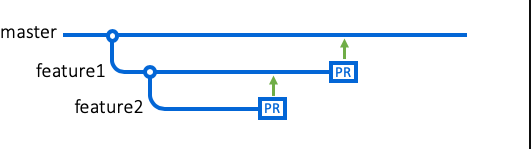
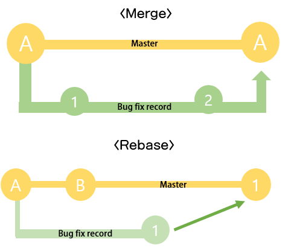

What is branch in github

A branch is a tool which assists collaborate operation efficiently. It lets collaborators modify files and maintain the original version of the project. Moreover, many collaborators not only manage the project at the same time but also determine whether record all of the log of the files.
Look at the picture from docs.github.com below. The line of master means the original version of the program. It will possibly be shared on the Github.

Feature 1 and Feature 2 might be fixing bugs, adding new functions or modifying several codes. To maintain the original version, a collaborator should create new branches like "feature1". It contains the same files from the master branch which is the main branch.

After altering operations in the branch, new files will be merged. Depending on the type of merge methods, it may be adjusted on the master branch with or without the records.
▶ Here are some command.
git checkout -b
git checkout master:go back to master branch
git merge
git pull .
git branch -m
git branch -m
Stash
If a user prefers to both maintain current working state and change your branch for a moment, there is a useful tool which is Git stash. This command will let the user save their process temporarily.
Here are some command and useful URL about Stash.
git stash / git stash save : create stash
git stash list :check stashh list
git stash apply : apply recent stash
git stash drop :delete stash